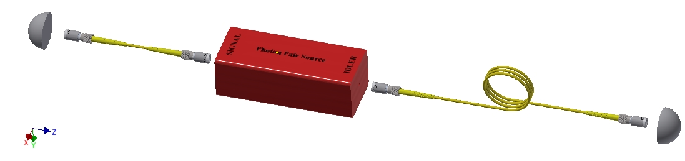

Our Team
We are studying awesome aspects of quantum word.
Lasota
Postdoctoral fellow
Kolenderski
Principal investigator
Misiaszek
PhD student
Gajewski
PhD student

Sedziak
PhD student
Gieysztor
student
Realistic implementations of quantum communication (QC) protocols suffer from imperfections of our currently available setups, limiting the information transmission range. The most recent laboratory tests show that the properties of existing optical fibers, sources of single photons and their detectors limit the range of secure quantum communication for the distances up to 260 km. Due to a very good quality of the emitted light, huge flexibility in terms of its wavelength and relatively low cost, the most popular realistic single-photon sources are based on the spontaneous parametric down- conversion (SPDC) process. This kind of devices produce entangled pairs of photons, out of which one photon (called idler) can be sent to a heralding detector in the QC implementations and the other one (signal) can be used to distribute the secure key. Photons belonging to a given pair can be correlated in many degrees of freedom. Typically, they exhibit so-called spectral anticorrelations, which means that a little deviation of the frequency of signal photon from its central value corresponds to a similar deviation of the frequency of idler photon, but in the opposite direction. However, it is possible to generate two-photon states with positive spectral correlations [Opt. Lett., 39, 1481 (2014), Phys. Rev. A 94 , 013838 (2016)]. In this situation, the frequencies of signal and idler photons are always shifted in the same direction. Such a feature of a pair of photons can be used to reduce unwanted noise when transmitting information over long distances in fibers [Optica, 4, 84 (2017), arXiv:1702.05165 ]. 
Although sources of photon pairs are necessary for the realization of many quantum communication protocols, the problem of optimization of the properties of photons produced by such devices for the aforementioned tasks has not yet been solved completely. In this work we theoretically demonstrate the possibility to extend the maximal distance of secure quantum communication in asymmetric setup configuration by manipulating the spectral correlation within a pair of photons produced by the source and optimizing the amount of chromatic dispersion affecting them during their propagation in quantum channels. In particular, we show that in some situations it can be beneficial for the trusted parties to introduce more dispersion in the shorter arm of the setup, which is contrary to the common expectations in typical case.
Arxiv:1702.05165Chromatic dispersion is one of the main limitations to the security of quantum communication protocols that rely on the transmission of single photons in single-mode fibers. This phenomenon forces the trusted parties to define longer detection windows to avoid losing signal photons and increases the amount of detection noise that is being registered. In this work, we analyze the effects of chromatic dispersion on a photon pair generated via spontaneous parametric down-conversion and propagating in standard telecommunication fibers. We also present the possibility of reducing the detection noise by manipulating the spectral correlation of the pair. As an example, we show that our results can be used to increase the maximal security distance of a discrete-variable quantum key distribution scheme in which the photon source is located between the legitimate participants of the protocol.
Optica, 4,84, (2017)Correlated photon pairs produced by a spontaneous parametric down conversion (SPDC) process can be used for secure quantum communication over long distances including free space transmission over a link through turbulent atmosphere. We experimentally investigate the possibility to utilize the intrinsic strong correlation between the pump and output photon spatial modes to mitigate the negative targeting effects of atmospheric beam wander. Our approach is based on a demonstration observing the deflection of the beam on a spatially resolved array of single photon avalanche diodes (SPAD-array).
Opt. Express 24 , 20947 (2016)Sources of photon pairs based on the spontaneous parametric down conversion process are commonly used for long distance quantum communication. The key feature for improving the range of transmission is engineering their spectral properties. Following two experimental papers [Opt. Lett., 38, 697 (2013)] and [Opt. Lett., 39, 1481 (2014)] we analytically and numerically analyze the characteristics of a source. It is based on a β-barium borate (BBO) crystal cut for type II phase matching at the degenerated frequencies 755 nm → 1550 nm + 1550 nm. Our analysis shows a way for full control of spectral correlation within a fiber-coupled photon pair simultaneously with optimal brightness.
Phys. Rev. A 94 , 013838 (2016)We are studying awesome aspects of quantum word.
Postdoctoral fellow
Principal investigator
PhD student
PhD student
PhD student
student
Norshamsuri Bin Ali
The research project aims at developing: 1) single-photon sources and single photon characterization techniques, and their 2) applications in a selection of problems, which have a high potential to be solved using carefully prepared states of photons. Those problems are quantum communication with single-mode fibers and free space link using satellite receiver, efficient entangled two-photon absorption and quantum interference with nanostructures .
The Faculty of Physics, Astronomy and Informatics of the Nicolaus Copernicus University in Toruń, Poland, organizes Torun Astrophysics Physics Summer program. Students interested in experimental and/or theoretical quantum optics related to single photon are welcome to apply. It can be done 1) when the current program edition is active via TAPS website directly or 2) all year long at spa@fizyka.umk.pl by sending CV (max. 4 pages) and motivation letter (max. 1 page).
Or follow us on twitter
Website created by: © 2017 Daniel Gustaw